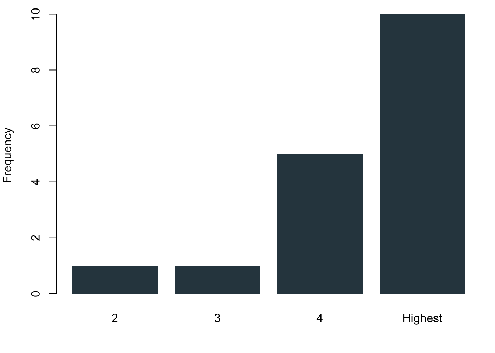
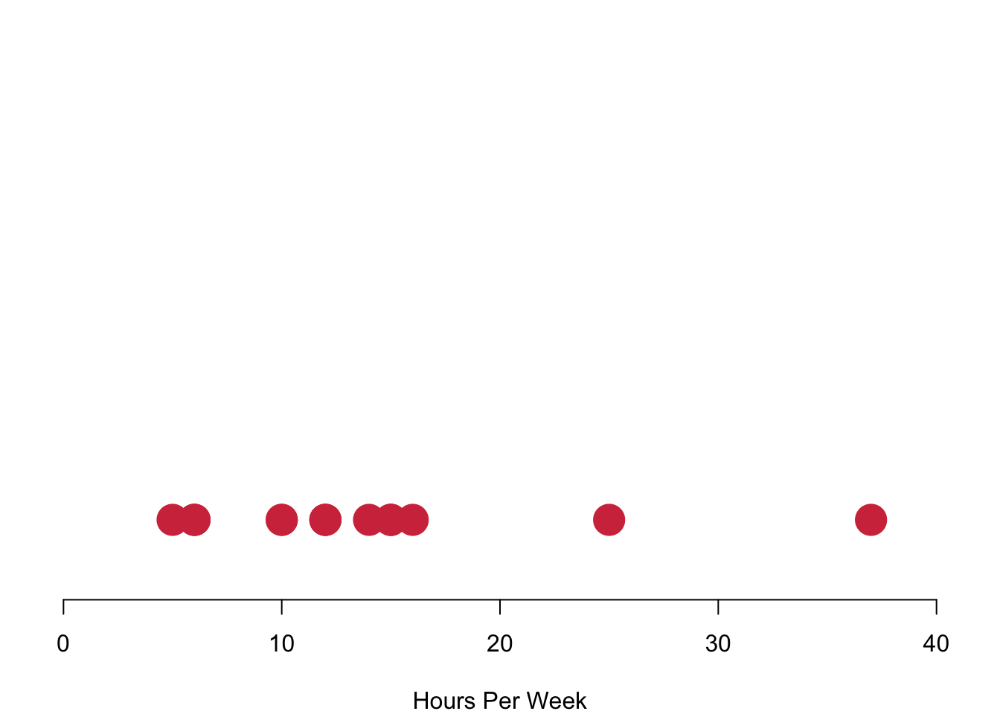
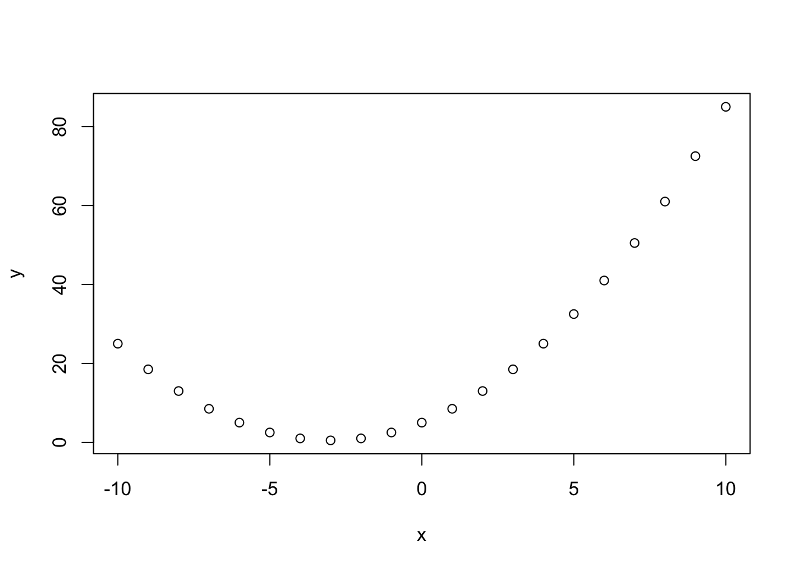
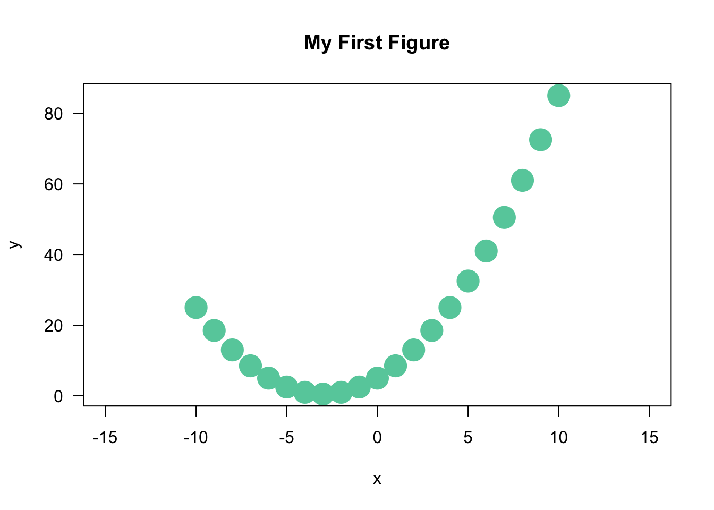
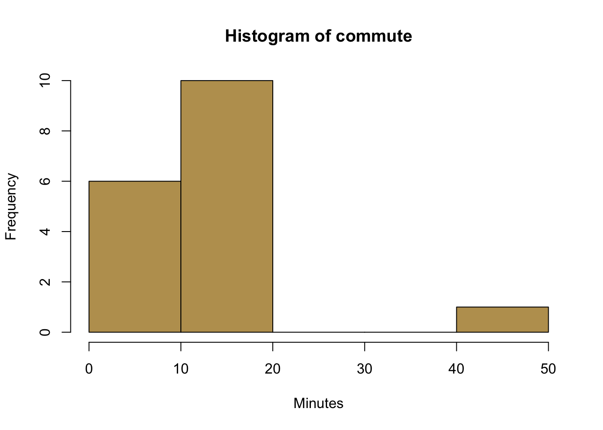
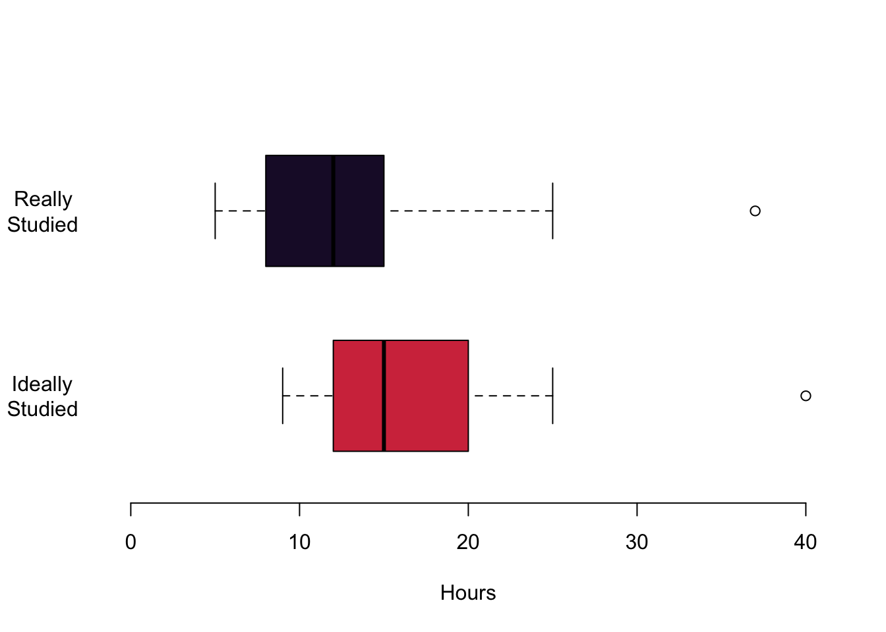

Chapter 3 Visualising Data
3.1 Communicating with Data Effectively
Good data visualisations tell stories that do not need much explanation. Those who view the data can understand what insights you want to communicate from the data without necessarily using a lot of text (like this one) as their explanation.
Viewing data visualisations is a lot of fun and a seemingly effortless way to explore and process the information in the data. The Internet is full with great examples at different levels of complexity. It is easy to get lost, take a look for example here, here or here. I am sure you can find many more interesting examples on the web.
From a creator point of view, they allow to communicate a lot of information in a direct way. But it goes without saying that a well done data visualisation requires a bit of thinking.
3.1.1 Thinking About your Data Visualisation
At its core, data visualisation is actually pretty simple. How can we possibly visualise the data in a way that it a) communicates the key information in our data well while b) transporting it so that it is easy to understand for the viewer?
Whenever you want to visualise data you should probably first sit down and think about what it is that you want to tell the end user of your visualisation? What is your key message? The visualisation ideally expresses more content with less ink. Or in more mathy terms:
\[\begin{equation} \text{maximize} \left( \frac{\text{content}}{\text{ink}} \right) \end{equation}\]
This optimization problem comes with an important sub-constraint: The skill level of your potential audience. It will greatly determine the level of complexity that you can pitch. Who is your audience? Are they a lay audience without a lot of statistical training? So they would probably require a visualisation that allows for a more intuitive understanding. If the audience is more technically versed, your approach to data visualisation can be more sophisticated.
Let us talk about colour. Think about the medium on which you want to use your figure. Is it made for publication in any printed format such as a report or a book? If so, be aware that not everybody is printing in colour, but usually in black and white. This means that you have to consider closely how light or how dark your colours are. For example, it might not be a good idea to use green and blue at the same time, simply because they are likely to have similar shadings. A colour that is too light might not be seen well on a white paper when printed. Of course, you are much more free in the choice of your colours when you your figures are for display on screens—like this homepage.
Also think about the colourblind. Can they view your figures, too? Be careful when you use the spectrum from red to green.
Ultimately, the choice of colours is a matter of preference and expression. If you feel arty, go wild! At the same time, picking the right colours is also a deep and awesome rabbit whole. Check this talk by the guys who invented the recent viridis colourscheme in case you want to get a taste.
3.1.2 Visualising ‘The Data’
When we are visualising data, we probably want to get an overview over it ourselves, so the first move is to take a look at ‘the data’ itself. How does it look like? How is it distributed? We learned that we have different data types, i.e. nominal, ordinal, interval and continuous data.
3.1.2.1 Nominal Data
The best way to visualise nominal data is the bar chart. It gives you a nice and succinct overview over the data without distorting your perception. You can plot data vertically as we have done here in blue or you can plot them horizontally—here in red. Be aware of using of not using pie charts. While they are indeed quite popular, they are wrongly so. It seems that Microsoft made us believe that this is a good way to represent data when they introduced visualisations in Excel. You can plot them with R, but it will remind you that there is research showing that it distorts your perception of the data. You will systematically overestimate the relevance of small proportions of the data and think that these proportions are much larger than they really are.

3.1.2.2 Ordinal Data
Ordinal data are nominal data that can be put into a logic order. Of course you can again use the barcharts like before. But you can also make use of the fact that now you actually have ranked data. Why not plotting them as a stacked barchart?

3.1.2.3 Interval or Continuous Data
Interval data converges to continuous data in the extreme, so let us treat them at the same time here. The left figure charts data simply on the basis of their value in red. We run into a pretty straight forward problem: We cannot see how often we are actually seeing each observation. The solution is to stack values in case they occur more often, like in the purple figure to the right. Here we have a really nice overview of how often we observe each case.

Plotting each individual data point is realistic for our case where we have just a few observations. However, this can become way too complex to process in case you have a larger number of values. In these circumstances you can visualise the distribution of the data with bins in which you collect your data. On the left in the blue histogram you can see how our data would look like if we split it up into eight groups—it results in a really nice pattern! On the right you can see how the data looks like if we just used four bins for it.
3.1.3 Visualising Typical Values and Spreads
Now that we have a first overview over how the data usually looks like, we want to become a bit more systematic in our approach to getting to know the data. Remember that we talked about typical values and spread when we wanted to describe data? This is what we want to visualise now. When you have interval or continuous data, there are a number of typical questions that you might want to know from the data.
- What is a typical value for the data?
- How are the values of a variable in a sample distributed?
- How clustered or dispersed are these values?
There is one visualisation that summarised this all: boxplots. They easily maximise the content-per-ink criterion. We can identify a number of things from this plot. The median of the distribution is a vertical bar and somewhere in the the colourful box in the middle. This box itself also expresses information: it covers the interquartile range, so the central 50% of the distribution are within the range of this box. If the distribution is symmetric, you can see that the median is in the centre of this box. In case the distribution is skewed, the median will push to one side or the other. The whiskers that you see give an impression of the magnitude of the overall spread of the data. Typically they are 1.5 times the interquartile range starting from the box. Data that goes beyond this range will be plotted with a circle.
Let us take a look at how useful this really is in practice.
In this first figure we are plotting the hours that you are actually studying in red and the hours that you think you should be studying in yellow. Let us begin with the median values. The median for the hours actually studied is 12, the median for the hours ideally studied is 15. You also get an impression of the magnitude of the interquartile range: it ranges from 9 to 15 for the top figure in red. For the lower figure, it begins at 12 and goes to a value to 20. Both distributions are a little skewed. On the top, the median is a bit to the right of the box. This means that a quarter of you study between the lower end of the box and the median value so somewhere between 9 and 12. The same interquartile range between the lower 25% quantile and the median is much smaller for the hours that you think you should ideally be studying. The whiskers offer an impression of the data beyond the interquartile range. The smallest value for the hours that you actually study is 5 in the top figure. The maximum hours that any of you studies is 37. The whiskers are a little different for the hours that you think you should ideally be studying. On the left, they range from 9 hours and they grow all the way up to 42 hours.
In the next figure, let us take a look at your reported age: I plotted your age between 18 and all the way up to 30 years and you can see it is not necessary to cover anymore space. Large parts of you—at least 75%—are either 19, 20 or 21 years. You can also see an outlier for one person who is a bit older, clearly visible outside of the whiskers. They can be seen as a clearly distinct circle.

Lastly, you also offered information about a variable that I think is particularly interesting. How much money do you spend when you go out? Here we can see the information nicely summarised in a box plot. The median person spends 20 GBP when they go out at night. A quarter of you spend between 15 GBP and 20 GBP. Another 25% spend between 20 GBP and 30 GBP when you go out. The whiskers give an indication of the whole spread of the distribution. There are people who typically spend 8 GBP when they go out. On the other side of the spectrum somebody seems to have quite deep pockets and is able of spending up to 50 GBP per night out.
3.2 Plotting Data with R
Now it is your turn.
When it comes to plotting, there is a package that has been put out a couple of years ago which is called ggplot2. On the web, you can find a lot of R visualisations that make use of it. For this class, however, we will stick to the basics—simply because I think it is good to first learn how to really control R from scratch. You can then always switch to higher level printing packages such as ggplot. Think of it as learning how to drive: In this module we will shift gears manually and you will find that switching to a car with automatic gears will not be any problem later. If you want to know more about ggplot2, this week’s reading of Chapter 8 in Fogarty (2019) is your friend.
In all we do here, I am showing you some basic options. Look for the name of the function in the help tab to find out more details about the functions.
3.2.1 Basics in Plotting
First, let us whip up some data.
# This creates a vector with a sequence of integers from -10 to 10 with a distance of 1
x <- seq(-10,10,1)
x## [1] -10 -9 -8 -7 -6 -5 -4 -3 -2 -1 0 1 2 3 4 5 6 7 8
## [20] 9 10We calculate a second variable.
a <- 5
b <- 3
c <- .5
y <- a + b*x + c*x^2
y## [1] 25.0 18.5 13.0 8.5 5.0 2.5 1.0 0.5 1.0 2.5 5.0 8.5 13.0 18.5 25.0
## [16] 32.5 41.0 50.5 61.0 72.5 85.0And then we use the function plot() to chart the data.
plot(x,y)
Simple, right? R takes over a number of jobs for you, from selecting the right data range in both axes, to chosing the shape and colour of representations for the data etc.. To give you a first idea, this is what happens when you tweak a number of options.
plot(x,y,
cex = 3, # size of the data points
pch = 16, # point character
col = 'aquamarine3', # chose the colour. R defaults with inverted commas.
las = 1, # rotates labels in y axis by 90 degrees,
xlim = c(-15, 15), # This defines the limit of the x-axis you want to plot in
main = 'My First Figure' # Title
)
You select the options by adding them with a comma. Check the help file in R-Studio for what is available. We will have a proper session on plotting bivariate data in a couple of weeks for all this, so do not worry about the details at this stage.
The important message that needs to come across is that R will handle a lot for you—but the possibilities to adapt everything that you were seeing are literally endless.
3.2.2 Colours
R is great for using all different kinds of colours. You can check the already pre-defined colours by calling the function colors(). Here, let us call the first 15 ones.
colors()[1:15]## [1] "white" "aliceblue" "antiquewhite" "antiquewhite1"
## [5] "antiquewhite2" "antiquewhite3" "antiquewhite4" "aquamarine"
## [9] "aquamarine1" "aquamarine2" "aquamarine3" "aquamarine4"
## [13] "azure" "azure1" "azure2"And you can even define your own colours using the rgb function. Cardiff University’s corporate identity colours for example can be generated like so.
# Predefined Cardiff colours
# primary
cardiffred <- rgb(211,55,74, maxColorValue = 255)
cardiffblack <- rgb(35,31,32, maxColorValue = 255)
cardiffgrey <- rgb(47,68,78, maxColorValue = 255)
cardiffgold <- rgb(189,158,94, maxColorValue = 255)
# secondary
cardiffblue <- rgb(21,44,81, maxColorValue = 255)
cardiffpurple1 <- rgb(29,15,51, maxColorValue = 255)
cardiffpurple2 <- rgb(60,44,89, maxColorValue = 255)And then you can use them for plotting.
a <- seq(1,10,1)
b <- rep(1,10) # repeats the value '1' 10 times
plot(a, b,
col = c(cardiffred, cardiffgrey, cardiffgold),
cex = 2,
las = 1,
pch = 15
)The number of data points is larger than the number of colours. R will therefore cycle through the colours.
3.2.3 Visualising Nominal and Ordinal Data
To visualise data in a way that we can chart them as a barplot, we first have to count them. How often do we observe each value? There is a really useful function for that in R, it is called table(). Just calling it without plotting is quite revealing.
table.breakfast <- table(breakfast)
table.breakfast## breakfast
## Coffee Other Tea
## 10 2 5Just a quick fyi: You can use the function prop.table() to get percentages. Then round() will round the resulting values.
prop.table.breakfast <- prop.table(table.breakfast)
prop.table.breakfast.rounded <- round(prop.table.breakfast, digits = 2)
prop.table.breakfast.rounded## breakfast
## Coffee Other Tea
## 0.59 0.12 0.29But we are here for visualising data. We need the object table.breakfast for our barplot.
barplot(table.breakfast)Let us make this a bit more pretty.
barplot(table.breakfast,
ylab = "Frequency", # Adds label to the y-axis
col = cardiffred, # You know this already
las = 1, # and this
border = NA # Removes the small black border around the bars
)
barplot(table.breakfast,
xlab = "Frequency",
las = 1,
col = cardiffgold,
horiz = TRUE # plots bars horizontally instead of vertically
)3.2.4 Visualising Continuous Data
We also wanted to take a look at continuous data. Let us see how far you are living from the university for that matter.
# R uses an algorithm to determine the number of bins
hist(commute,
col = cardiffgold,
xlab = "Minutes",
)
# Here we control a bit more by ourselves
hist(commute,
breaks = 3, # This is a very rough break into three bins
col = cardiffpurple1,
xlab = "Minutes",
main ='', # suppress the default main title
border = "white" # border around the histograms--here set to white
)
3.2.5 Boxplots
Finally, let us take a look at boxplots. The default function is called boxplot(). Calling it with a continuous variable such as spend as its argument will already generate a plot that has all the important information.
boxplot(spend)But admittedly it is far from pleasent to look at the figure. Since we want that others pay attention to our message, let us make our visual communication more appealing.
# here, we create a data object that is a list. Think of it as a super flexible data object.
list.study <- list(studyideal, studyperweek)
boxplot(list.study,
horizontal = TRUE,
col = c(cardiffred, cardiffpurple1), # different colours for the plots
axes = FALSE, # we are suppressing all axes
boxwex = .6, # this is about the width of the interquartile range box
ylim = c(0,40), # defines the limit of the x-axis (!).
# It would have been the y-axis, but we rotated the figure.
# This is a superconfusing command of the boxplot function
# We just have to live with it...
xlab = 'Hours' # Label for the x-axis
)
# Here, we are adding axes manually to have more control over them.
axis(2, col = "white",
las = 1,
at = c(1,2), # where to put the tickmarks
lab =c("Ideally \n Studied", "Really \n Studied") # Labels. '\n' is a new line
)
axis(1)
This is it for this week.
3.3 Readings for This Week
Don’t forget to check into the readings of this week which is chapter 8 in Fogarty (2019). As mentioned it is all about ggplot2—take it as a pointer to what is possible. We will not cover ggplot2 in this class, but you are of course free to go wild and become a proper ggplotter.